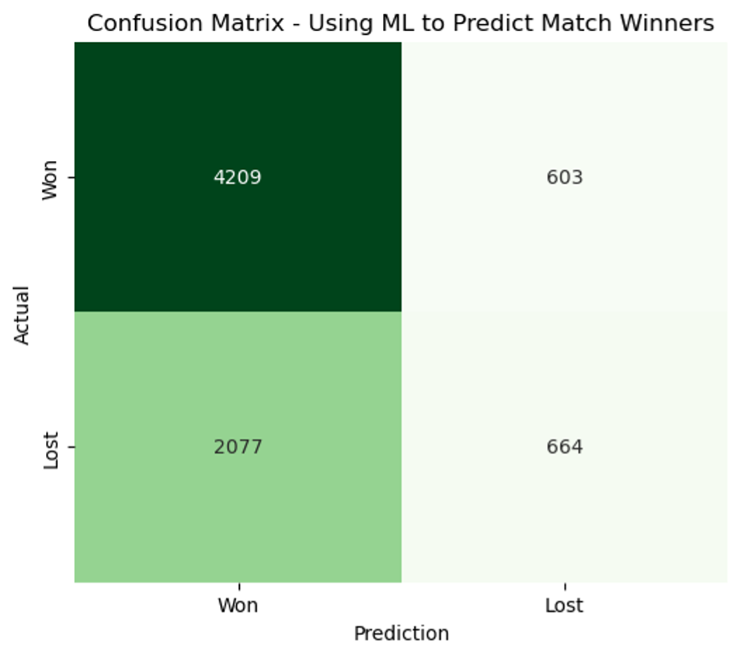
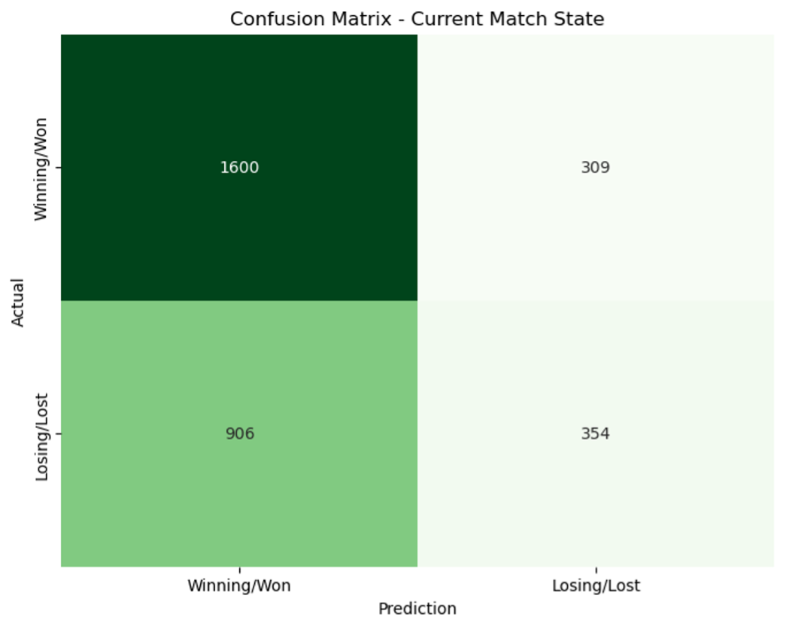
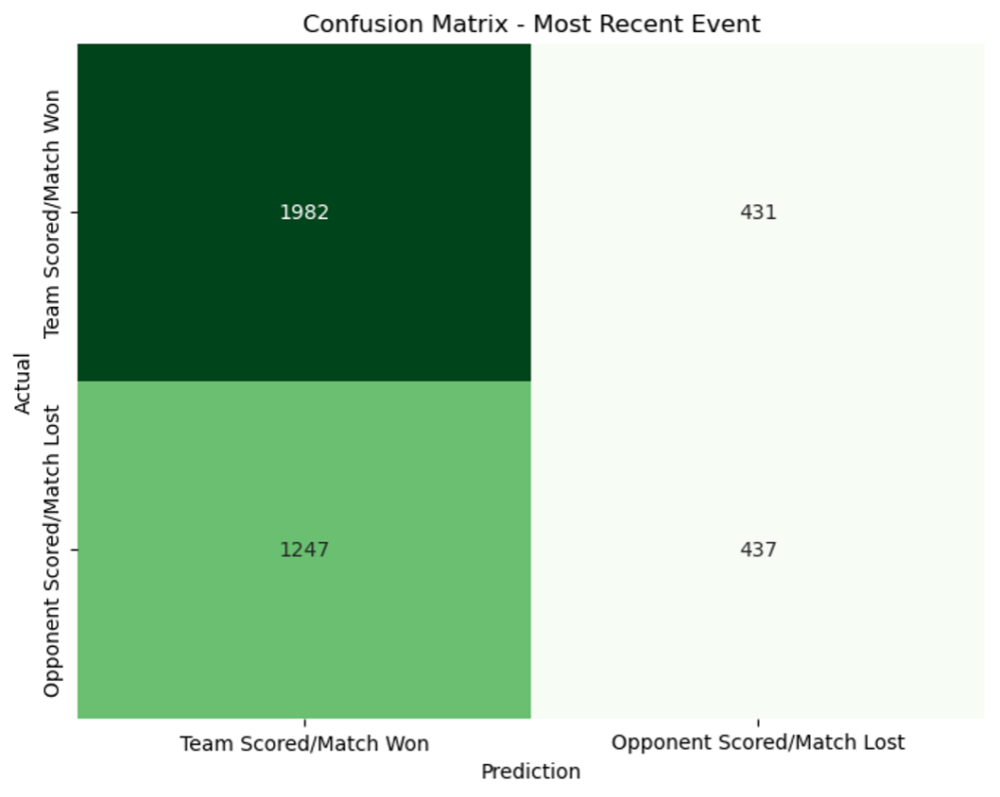
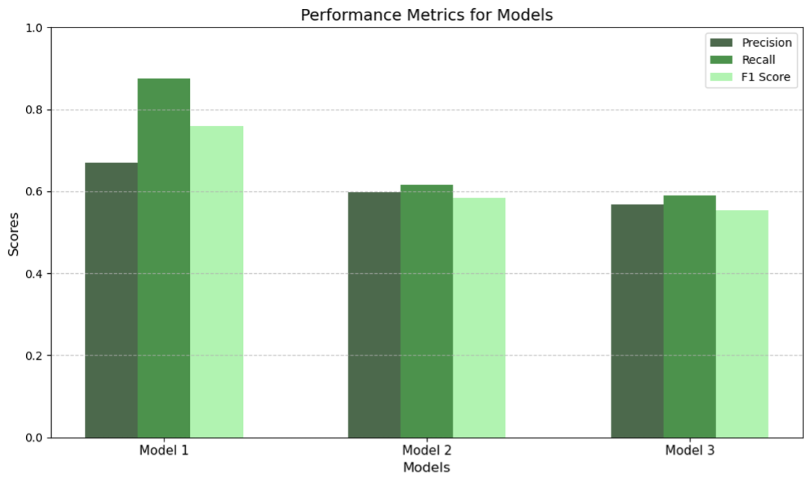
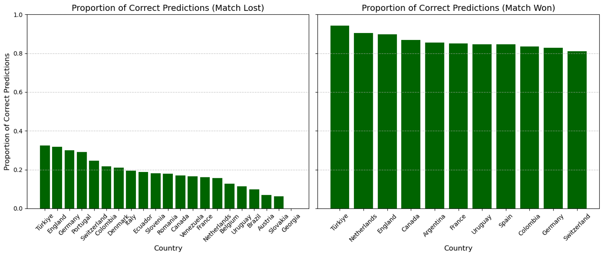

Machine Learning
1 Executive Summary
The application of Machine Learning (ML) in this project has provided insight into the relationship between fan sentiment on Reddit and actual match and player data from Euro 2024 and Copa America 2024. Our goal was to predict match outcomes, match states, and most recent match events using sentiment analysis and structured match data. By leveraging Spark ML, we successfully developed binary classification models that demonstrated strong predictive performance.
One of the most impactful accomplishments of this analysis was the ability to predict match outcomes with a high degree of accuracy, based on both sentiment metrics from subreddit activity and real-time match data. This achievement underscores the potential for integrating NLP-driven insights with structured sports analytics to create predictive tools for event forecasting.
The models not only showcased excellent performance but also revealed actionable insights, such as the influence of fan sentiment on match predictions and how specific player or team statistics correlate with game dynamics. These findings provide a framework for developing scalable and efficient predictive systems for sports analytics, empowering stakeholders to enhance fan engagement, optimize team strategies, and identify potential opportunities for sponsorships or partnerships.
2 Analysis Report
2.1 Introduction
The primary goal of this project was to bridge the gap between fan sentiment expressed on Reddit and the real-world dynamics of football matches during Euro 2024 and Copa America 2024. By leveraging Spark ML, we aimed to predict match outcomes, identify ongoing match states, and analyze the most recent match events using a combination of sentiment data and structured match statistics.
The dataset consisted of three key components:
- Reddit Comments: Fan sentiment and engagement metrics were derived from subreddit activity related to participating teams in the tournaments, focusing on the knockout stages.
- Match and Player Data: Real-time match events, player statistics, and team performance data provided a robust basis for predictions.
- Reddit Submissions: Submissions on the soccer subreddit to get relatively accurate timestamps for goals and match endings in order to determine the context surrounding each comment during a match.
This approach allowed us to explore the interplay between online sentiment and actual match outcomes, providing a holistic perspective on how fan reactions correlate with team performance. Our initial ML objectives included building and evaluating binary classification models for the following tasks:
- How can machine learning techniques be used to predict match outcomes?
- To what extent can specific in-game contexts explain simultaneous online behavior?
- Is the predictive ability of machine learning models dependent on the identity of the commenters they seek to analyze?
By addressing these goals, we sought to advance the field of sports analytics and demonstrate the predictive power of integrated sentiment and event data.
2.2 Data Preparation
Since the binary classification tasks we will be carrying out will use the body of each relevant comment as the input, text preprocessing is a vital step to prepare these strings for analysis. To accomplish this, we used three PySpark preprocessing features. Firstly, Tokenizer was used to break down the text strings into smaller tokens. To isolate only important words that may have an effect on a comment’s meaning, we used StopWordsRemover. Finally, we used HashingTF and IDF to perform TF-IDF vectorization and change the data type such that it can be fed into a machine learning pipeline.
Additionally, we considered the target variables, of which there were three. All of them needed to be cast to integers prior to training. The first test was to try to predict the Match Won column, essentially just whether the commenter’s team won the match during which they commented. The second was the Status column, attempting to predict whether the commenter’s team was winning or had won at the time of the comment. Thus, prior to training this model, any comments that occurred while the respective match was tied were removed. Finally, the final test involved the Most Recent Event column, attempting to predict whether the commenter’s team had either most recently scored or already won the match. Similarly, all comments that came before the match’s first goal were removed prior to training.
The last step of data preparation was to split the comments dataframe into training and testing sets, which was done randomly using an 80%-20% split.
2.3 Model Development
After data preparation, we used the PySpark LogisticRegression model to carry out all three of these binary classification tasks. This assigned probabilities to each record as raw predictions, which were then translated to binary predictions during evaluation using the BinaryClassificationEvaluator in PySpark. It was important to use the same model type and hyperparameters for all three tasks, as we will compare their performances after evaluating. The key metrics that were recorded to determine performance were precision, recall, and F1-score to obtain a thorough understanding of model performances.
2.4 Results and Evaluation
The following three confusion matrices represent the performances of each of the three models when applied to the testing set of data. One observation that is readily apparent is the data imbalance, which was known from the start. As noted during exploratory data analysis, there is a higher volume of commenters from winning teams. The models clearly picked up on this, and were even more likely to assign a positive value to a comment, presumably reasoning that loss will be diminished when the mode value is selected. Nevertheless, positive values were not entirely selected, and these matrices show that all three tasks performed noticeably better than random selection would. In fact, in all three cases, true negatives outnumber false negatives, despite the exacerbated imbalance.



Below we can see the comparison of the three models in bar chart and tabular form. This provides a clear picture that machine learning tasks performed better when simply attempting to predict the match winner, rather than either iteration of trying to predict the context of a match at the time of a comment. Once again, all values exceeding 0.5 indicates that the models were able to learn valuable insights that are at least slightly predictive, but introducing more complexity to the data clearly did not help.
One potential reason for this is that the time that one commenter sees a match event can differ greatly from when it actually happens or when it is first actualized in an r/soccer submission. Additionally, commenters may comment on the overall state of a match, rather than the immediate happenings at the time. For instance, if a team is outperforming its opponent but neither have scored yet, that team is more likely to win but commenters at the time will not be labelled as commenting during a positive moment in the match.

| Match Result | Match Status | Most Recent Event | |
|---|---|---|---|
| Precision | 0.67 | 0.60 | 0.57 |
| Recall | 0.87 | 0.62 | 0.59 |
| F1 score | 0.76 | 0.58 | 0.55 |
Finally, the figure below analyzes where the best model (predicting the overall match result) succeeded and failed. Firstly, these bar charts are split by whether or not the commenter’s team won. As expected due to the single-elimination format, there are far fewer unique winners than losers. This juxtaposition illustrates the point made above, where the data imbalance leads to a scenario where the true positive rate far exceeds true negatives.
By comparing performance by country, we can observe one interesting phenomenon. With match losers, the greatest accuracy is found in countries that did relatively well in the tournament, winning multiple games prior to being knocked out late. Each team can only lose once, so while countries can and do differ in quantity of comments, each of these reflects just one match. One possible explanation is that teams with greater expectations who have made it further in the tournament may be more likely to react negatively to a loss, thus making their result more predictable.

2.5 Conclusion
There are two main takeaways from the execution of machine learning techniques. The first is that our methods were relatively effective in using text data to train a Spark ML model and predict team performance. All three tasks performed better than a random selection, which can be considered a success due to the volatility and randomness of Reddit comments. The second is that providing additional context to explain what was happening at the time of a comment had a detrimental effect on model performance.
Ultimately, this exercise shows that real-world sports outcomes are reflected in online discourse, although using just analytical methods may not be sufficient for confidently predicting them. Future tasks might see greater success if comments could be more accurately lined up to in-match events. Additionally, the reality that our dataset relies on self-identification of fandom and a very specific time frame may affect the style of comments, which might not fully reflect an entire corpus of discussion across Reddit.
3 ML Code Repository
Explore the code for our Machine Learning here.